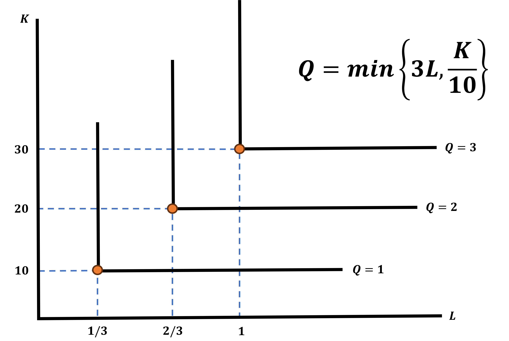

Production
EC 311 - Intermediate Microeconomics
2025
Outline
Chapter 6
Topics
Producer Theory Basics (6.1)
Short-run vs Long-run (6.2, 6.3)
Cost Minimization Problems (6.4)
Returns to Scale (6.5)
Technological Change (6.6)
Big Picture
As economists, we want a model of market economies based in rational choice theory.
Why?
Make positive predictions about economics consequences of future world-events
Guide efficient production of market goods. I.e., how to make the most of the limited resources we have
Guide policy makers to craft socially-efficient policies. E.g., How to make public funds benefit the maximum amount of people in need?
Big Picture
Our first step was to construct a model of a rational consumer.
This allows us to predict what will people do when things change:
how income changes affect consumption
how price changes affect consumption and substitution
…without telling making judgements about what they should do
Big Picture
But markets are not only influenced by consumers, so now we will consider the other side; firms, or producers of goods.
If consumers care about maximising their happines, what do we think producers care about?
Profit! üí∞üí∞üí∞
Meeting the needs of their consumers
- could apply even to non-profits like government agencies or NGO’s
Big Picture
Why should we care about what big corporations do with their inputs?
Because as consumers we are affected by the choices they make
Our models here can be applied to sujects like anti-trust policy, environmental regulations, and other consumer welfare issues!
We’ll start off with assuming perfect competition, full information, no externalities, etc. but by relaxing these assumptions we can apply our simple models to tackle big issues
Why care about industrial production?
Big Picture
Before we deal with the more interesting examples of market failures, we’ll need to understand how the market works under optimal conditions:
perfect information
many producers
consumers internalize all costs/benefits privately (no externalities)
Producer Theory Basics
Production Assumptions
Just like we made simplifying assumptions about consumers, we’ll need some ground rules for producers:
- Single production good
- Product choice is fixed
- Cost minimization
- Capital is fixed in short-run
- More inputs \(\rightarrow\) more outputs
- Diminishing marginal returns
- Firm’s aren’t budget constrained
I’ll tackle each one in a slightly different order, but this is how they appear in the textbook
Assumption 1: Single Output
In our models, each type of firm only produces one type of good.
- I.e., Shoe companies just produce generic shoes, we don’t care about different styles
Firms: What do They Make? How Do They Make It? Let’s Find Out!
Let’s determine the role of the firm
Firms produce goods (output) to sell consumers
To produce output, firms need factors of production (inputs) such as labor and capital
Firms use a production process (technology) to transform inputs into output
Firm Productivity
How firms choose to produce things is guided by a similar principle to how individuals consume things
Marginal Productivity
The impact of one additional factor of production on the total amount produced
Recall that utility is usually diminishing as consumption increases
Productivity also diminishes as a firm uses more inputs
Production Functions
In mathematical language: a production function takes inputs to create a quantity of output:
\[f(x_1,...,x_n) : \mathbb{R}^n \rightarrow \mathbb{R}\]
- Just like utility functions, production functions can take multiple inputs
Production Functions
We will only consieder production with two inputs at a time:
\[Q = f(K,L)\]
This production function means that a firm produces \(Q\) units of it’s output good using:
- \(K\): Captial (machines, buildings, computers, etc.)
- \(L\): Labor - the human workers who use the capital
- Units could be in number of workers, labor hours, etc.
Assumption 2: Product Choice is Fixed
We will assume that all potential producing firms in a market have already decided on their single product.
- We don’t consider e.g., Amazon going from ecommerce to cloud services
Assumption 5: More Inputs -> More Output
For simplicity, we assume that firms can always achieve higher production levels by using more inputs
\((f(K,L)\) is monitonically increasing in \(K,L\) (\(\frac{df}{dK},\frac{df}{dL}>0\))
similar to our “more is better” assumption of consumer utility
Assumption 6: Diminishing Returns
More capital and labor always leads to more production, but those gains will fade out the more you have already used
\(\frac{df}{dK^2},\frac{df}{dL^2} < 0\)
If graphed on the input-product axes, the production function will be concave.
The Production Problem
We will begin by making a simplifying assumption to make our lives easier
Firms will have 2 typical inputs
Labor (L) \(\Rightarrow\) Workers
- The cost of a unit of labor is the wage \((w)\) paid
Capital (K) \(\Rightarrow\) Factory space, equipment, hardware, etc.
- The cost of a unit of capital is the rental rate or interest rate \((r)\)
Labor Inputs for an Office

Capital Inputs for an Office
Formalizing the Production Problem
Similar to the Budget Constraint from Consumer Theory, we can formalize the firm’s costs:
\[ \text{Costs:} \;\; w \cdot L + r \cdot K \]
Write the costs of a firm that faces a wage of $10 and a rental rate of $12:
\[ \text{Costs:} \;\; 10 L + 12 K \]
Long vs Short Run Production
Assumption 4: Capital is Fixed in the Short-Run
We implicitly define the short-run as the time-span where firms don’t have enough time to buy more capital.
- As opposed to the long-run where capital is assumed to be variable
Assumption 7: Firms aren’t Budget Constrained
For the short-run, capital is only constrained by time-frame, not by how much money the firm has.
In the long-run, the firm can choose any combination of capital and labor it wants
We assume that as long as there is profit to be made, there is a complete credit market that will provide funds
Example: Dante’s Taco Truck
Before we found the demand functions for Tacos (and drinks).
- But now we want to figure out how best I should meet that demand.
Suppose that we just care about producing Tacos, which require deep fryers \(K\), and workers \(L\)
\[Q_s^{\text{tacos}} = f(K,L) = \sqrt{KL}\]
Example: Dante’s Taco Truck
I only have 4 fryers to start out with \(\bar{K}=4\), but I can hire as many workers as I need.
| Fryers | Workers | Tacos Produced |
|---|---|---|
| 4 | 1 | 2 |
| 4 | 2 | \(\sqrt{8} \approx 2.8\) |
| 4 | 3 | \(\sqrt{12} \approx 3.5\) |
| 4 | 4 | 4 |
- What do you notice as the number of workers increases?
Example: Dante’s Taco Truck
The marginal product of labor is decreasing!
| Fryers | Workers | Tacos Produced | Marginal Product |
|---|---|---|---|
| 4 | 0 | 0 | - |
| 4 | 1 | 2 | 2 |
| 4 | 2 | \(\sqrt{8} \approx 2.8\) | 0.8 |
| 4 | 3 | \(\sqrt{12} \approx 3.5\) | 0.7 |
| 4 | 4 | 4 | 0.5 |
The next worker adds less and less to the total production the more workers we already have in the kitchen
Marginal Product of Labor
The Marginal Product of Labor is the change in the quantity of production caused by a change in the quantity of labor as an input.
Given a production function \(f(K,L)\), how could you find an expression which represents this change for any quantity change of labor?
Take the partial derivative \(\frac{df}{dL}\) holding capital fixed!
Average Product of Labor
The average product is different from the marginal product
\[AP_L = Q/L\]
| Fryers | Workers | Tacos Produced | Marginal Product | Average Product |
|---|---|---|---|---|
| 4 | 0 | 0 | - | - |
| 4 | 1 | 2 | 2 | 2 |
| 4 | 2 | \(\sqrt{8} \approx 2.8\) | 0.8 | \(\approx 1.4\) |
| 4 | 3 | \(\sqrt{12} \approx 3.5\) | 0.7 | \(\approx 1.2\) |
| 4 | 4 | 4 | 0.5 | 1 |
Cost Minimization Problems
Assumption 3: Cost Minimization
Instead of trying to maximize production, firms try to minimize costs while trying to meet a specific level of production.
\[ \begin{align} min & w \cdot L + r \cdot K \\ \text{subject to } & f(K,L) = Q \\ \end{align} \]
- Notice how this is the flip side of the constrained maximization problem?
Isoquants
What do these production functions look like graphically?
isoquants are sets of bundles of inputs that produce the same level of output
Visually similar to indifference curves, but conceptually different
Firm Optimization Story Time
Imagine you are the manager of a clothing factory that produces Ducks football jerseys
It is almost Fall and Mr. Nike himself calls you. They tell you “We need 20,000 jerseys made for the start of the season”
Your goal is to choose how many workers \((L)\) and how much capital \((L)\) to use to produce the 20,000 jerseys as cheaply as possible
How do you figure out how to use \(L\) and \(K\) to make 20,000 jerseys?
With a Production Function
Production Functions
These are a function of how a firm can transform inputs into outputs
It will work just like a utility function
- In our the jersey example, we have:
\[\begin{align*} F(L,K) &= Q \\ F(L,K) &= 20,000 \end{align*}\]
Putting it Together
The problem the factory manager solves can be written as
\[ \min \;\; w \cdot L + r \cdot K \;\;\; s.t. \;\;\; F(L,K) = Q = 20,000 \]
We can read this as:
- The firm minimizes their costs (\(w \cdot L + r \cdot K\)) such that you produce a given quantity \((Q)\) using labor \((L)\) and capital \((K)\) with Production Technology \(F(L,K)\)
Let’s Give Things Some Values
Now let’s say we have the following values:
- Wages are \(w = 10\)
- Rental rates are \(r = 5\)
- The factory’s Production Function is \(F(L,K) = 5L + 2K\)
The problem becomes:
\[ \min \;\; 10L + 5K \;\;\; s.t. \;\;\; F(L,K) = 5L + 2K = 20,000 \]
Solving Cost Minimization Problems - New Terms
The methods to solve these problems are practically the same as we saw in Consumer Theory
However, we need to re-label some things:
- The Marginal Rate of Substitution will not be named Marginal Rate of Technological Substitution (MRTS)
- This has a similar interpretation as before:
- What is the firm’s willingness to trade Labor for Capital
- This has a similar interpretation as before:
- Now, instead of using the ratio of marginal utilities, we will use the ratio of marginal productivities
\[ \text{MRTS} = \frac{MP_{L}}{MP_{K}} = \frac{\frac{\partial F}{\partial L}}{\frac{\partial F}{\partial K}} = \frac{\text{Marginal Productivity of Labor}}{\text{Marginal Productivity of Capital}} \]
Let’s Solve the Jersey Problem
\[ \min \;\; 10L + 5K \;\;\; s.t. \;\;\; F(L,K) = 5L + 2K = 20,000 \]
The solution should look very familiar. We are trying to choose \(L^{*}\) and \(K^{*}\) that optimizes our productivity.
What type of production function is this?
Perfect Substitutes
Find MRTS and Set Equal to Price Ratio
\[\begin{align*} \text{MRTS} \;\; &? \;\; \text{Price Ratio} \\ \frac{MP_{L}}{MP_{K}} \;\; &? \;\; \frac{w}{r} \\ \frac{5}{2} \;\; &? \;\; \frac{10}{5} \\ \end{align*}\]
Interpret the MRTS and Price Ratio Relationship
\[ \text{MRTS} > \text{Price Ratio} \]
Use only Labor \(\; \rightarrow \; K^{*} = 0\)
Plug into Production Function
\[ K^{*} = 0 \; \Rightarrow \; F(L,K) = 20,000 \; \rightarrow \; 5L + 2(0) = 20,000 \; \rightarrow \; L^{*} = \frac{20,000}{5} = 4,000 \]
Jersey Problem 2
\[ \min \;\; 10L + 5K \;\;\; s.t. \;\;\; F(L,K) = 5L + 2K = 20,000 \]
What if \(\; w = 20 \;\) and \(\; r = 5 \;\)?
Find MRTS and Set Equal to Price Ratio
\[\begin{align*} \text{MRTS} \;\; &? \;\; \text{Price Ratio} \\ \frac{MP_{L}}{MP_{K}} \;\; &? \;\; \frac{w}{r} \\ \frac{5}{2} \;\; &? \;\; \frac{20}{5} \\ \end{align*}\]
Interpret the MRTS and Price Ratio Relationship
\[ \text{MRTS} < \text{Price Ratio} \]
Use only Capital \(\; \rightarrow \; L^{*} = 0\)
Plug into Production Function
\[ K^{*} = 0 \; \Rightarrow \; F(L,K) = 20,000 \; \rightarrow \; 5(0) + 2K = 20,000 \; \rightarrow \; K^{*} = \frac{20,000}{2} = 10,000 \]
Production Function Forms
We have the exact same functional forms that we used for utility functions
- Cobb-Douglas
- Quasi-Linear
- Perfect Substitutes
- Perfect Complements
This is good news! It means that mathematically nothing should be suprising
We are just relabeling variables and using the same processes we already know
Production Function Example
Identify and find the MRTS for the following Production Function
\[ F(L,K) = L^{1/3}K^{2/3} \]
\[ \text{MRTS} = \frac{MP_{L}}{MP_{K}} = \frac{1/3 \cdot L^{-2/3}K^{2/3}}{2/3 \cdot L^{1/3}K^{-1/3}} = \frac{1/3}{2/3} \cdot \frac{K^{2/3}K^{1/3}}{L^{1/3}L^{2/3}} = \frac{1}{2} \cdot \frac{K}{L} \]
Solving Cost Minimization Problems
We will deal with each functional form the same way as we did before.
Cobb-Douglas
Set MRTS equal to Price Ratio
This tells us the relationship that must hold between \(L\) and \(K\) (Optimality Conditions)
Plug Optimality into Production Function constraint
Quasi-linear
Set MRTS equal to Price Ratio
This tells you exactly how much of the input that is inside the \(ln()\) function to use
Plug Optimality into Production Function constraint
Perfect Complements
- Enforce the No-Waste Condition
Perfect Substitutes
Compare the MRTS to the Price Ratio
- If MRTS is larger, use only labor \((L)\)
- If MRTS is smaller, use only capital \((K)\)
Cost Minimization Example
\[ \min \;\; 10L + 5K \;\;\; s.t. \;\;\; F(L,K) = L \cdot K = 20,000 \]
Find the Optimal Values of Labor and Capital
Find MRTS and set it equal to Price Ratio
\[\begin{align*} \text{MRTS} &= \frac{w}{r} \\ \frac{K}{L} &= \frac{10}{5} = 2 \\ K^{*} &= 2L \end{align*}\]
Plug Optimality Condition into Production Function constraint
\[\begin{align*} L \cdot \color{red}{K^{*}} &= 20,000 \\ L \cdot \color{red}{2L} &= 20,000 \\ 2L^{2} &= 20,000 \\ L^{2} &= 10,000 \\ L^{*} &= \sqrt{10,000} \\ L^{*} &= 100 \\ \\ \end{align*}\]
Find Optimal Capital
\[K^{*} = 2 \cdot \color{red}{L^{*}} = 2 \cdot \color{red}{100} = 200\]
Perfect Substitutes Example
Let the firm’s production function be \(F(L,K) = L + 2K\). What are the cost minimizing \(L\) and \(K\) to produce 100 goods, when they face \(w = 10\) and \(r = 10\)
Find MRTS and Compare to Price Ratio
\[\begin{align*} \text{MRTS} &= \frac{w}{r} \\ \frac{MP_{L}}{MP_{K}} &= \frac{10}{10} \\ \frac{1}{2} &\lesseqgtr 1 \end{align*}\]
Determine which is greater
\[\begin{align*} \frac{1}{2} < 1 \end{align*}\]
Use only Capital \(\rightarrow L^{*} = 0\)
Plug into Production Function to Determine \(\; K^{*}\)
\[\begin{align*} F(L,K) &= Q \\ L^{*} + 2K^{*} &= 100 \\ 0 + 2K^{*} &= 100 \\ K^{*} &= 50 \end{align*}\]
What’s Actually Different Then?
Although the problem we are solving is essentially the same, the levers we are pulling are not
Let’s introduce some new (but familiar) concepts:
Production Functions have Isoquants instead of Indifference Curves
Isoquants are all the possible combinations of labor and capital that produce a certain level of output
Fortunately, they have the same shape as their Indifference Curves but instead of a level of Utility, they represent a level of quantity produced
Isoquants
Imagine that it takes exactly 20 minutes of labor (1/3 of an hour) AND 10 units of capital to make one Ducks Jersey
What form does this Production Function take?
Perfect Complements

What’s Actually Different? The Process
The key difference is a conceptual one:
For consumers, we would maximize the Utility Function, where the costs acted as our constraint
For producers, we minimize the cost function and the production function is the constraint
- Additionally, we will call this cost function an Isocost line
We are looking for the lowest possible Isocost line that touches the production contraint exactly once
Understanding the Differences Visually
What is the Same?
Some things have not changed
- The slope of the isoquant is the negative MRTS (-MRTS)
- The MRTS tells us the firm’s willingness to trade away capital to get another unit of labor
- We still have a price ratio: \(\frac{w}{r}\)
Returns to Scale
Extra Property of the Production Function
The largest mathematical difference between production and utility are Returns to Scale
With utility we were “measuring” units of happiness or utility
- But what is 1 unit of utility? No clue
Production, however, is more easily measured:
One unit of production or \(Q\) can be:
A Ducks jersey
A Chocolate Bar
A car
Etc.
What Are Returns to Scale?
Returns to Scale will measure the following:
If I increase my inputs by equal amounts (such that labor and capital increase by some constant \(z\)), how much does my output increase by?
There are three possible outcomes:
- Decreasing Returns to Scale (DRS)
- Constant Returns to Scale (CRS)
- Increasing Returns to Scale (IRS)
Returns to Scale Example
Let’s say you run a small business where you make corndogs. You are currently employing 10 labor hours and 100 units of capital
All together, these inputs help you produce 20 Corndogs
Now you double your inputs, such that:
- Labor Hours \(10 \Rightarrow 20\)
- Units of Capital \(100 \Rightarrow 200\)
- Now you produce 30 Corndogs
Decreasing Returns to Scale
Returns to Scale: Mathematically
As usual, we can show these concepts mathematically
- Decreasing Returns to Scale
\[ F(zL,zK) > z \cdot F(L,K) \]
- Constant Returns to Scale
\[ F(zL,zK) = z \cdot F(L,K) \]
- Increasing Returns to Scale
\[ F(zL,zK) < z \cdot F(L,K) \]
Let’s Prove Returns to Scale
Let your Production Function be \(F(L,K) = L^{2}K\) and you increase your inputs by some constant \(z\)
\[\begin{align*} F(zL,zK) &= (zL)^{2} \cdot zK \\ &= \color{red}{z^{2}}L^{2} \cdot \color{red}{z}K \\ &= \color{red}{z^{3}} \cdot L^{2} K \end{align*}\]
Compare this to what scaling your production function by \(\; z \;\) looks like
\[\begin{align*} z^{3} \cdot L^{2}K > z \cdot L^{2}K \end{align*}\]
We have Increasing Returs to Scale (IRS)
Returns to Scale Example
Let the Production Function be \(F(L,K) = L^{1/4}K^{3/4}\) and you increase your inputs by some constant \(z\)
Show what type of Returns to Scale you have
\[\begin{align*} F(zL,zK) &= (zL)^{1/4} (zK)^{3/4} \\ &= \color{red}{z^{1/4}}L^{1/4} \cdot \color{red}{z^{3/4}}K^{3/4} \\ &= \color{red}{z^{1/4}}\color{red}{z^{3/4}}L^{1/4}K^{3/4} \\ &= \color{red}{z} \cdot L^{1/4}K^{3/4} \end{align*}\]
Compare this to what scaling your production function by \(\; z \;\) looks like
\[\begin{align*} z \cdot L^{1/4}K^{3/4} = z \cdot L^{1/4}K^{3/4} \end{align*}\]
We have Constant Returns to Scale (CRS)
Returns to Scale Example
Let the Production Function be \(F(L,K) = L^{1/3}K^{1/2}\) and you increase your inputs by some constant \(z\)
Show what type of Returns to Scale you have
\[\begin{align*} F(zL,zK) &= (zL)^{1/3}(zK)^{1/2} \\ &= \color{red}{z^{1/3}}L^{1/3} \cdot \color{red}{z^{1/2}}K^{1/2} \\ &= \color{red}{z^{5/6}} \cdot L^{1/3}K^{1/2} \end{align*}\]
Compare this to what scaling your production function by \(\; z \;\) looks like
\[\begin{align*} z^{5/6} \cdot L^{1/3}K^{1/2} < z \cdot L^{1/3}K^{1/2} \end{align*}\]
We have Decreasing Returs to Scale (DRS)
Goal of Cost Minimization
Producers have a target quantity they must achieve
Their goal is to do so in the cheapest form possible using their inputs and their production technology
When choosing quantities, they are also aware of how much their inputs will cost them
All this together means that they will find the minimum cost line to achieve a target quantity of goods
- Later we will find the supply function much like we found the demand function for consumers
EC311 - Lecture 05 | Production